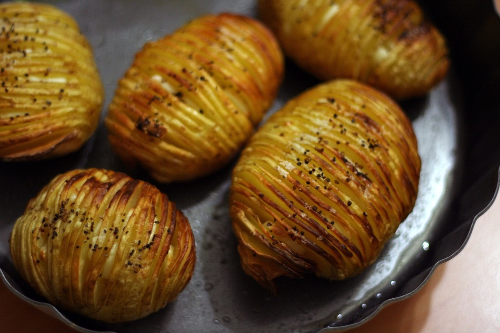

Baked potato

Juicy potato cunty way to spend your dinner time, follow up the recipe and enjoy the perfection of culinary
What you will need
- Potato (duah)
- Olive oil
- Peper & Salt
- Mayo
Asssuming you have oven, water, pod, time, apartment, hands, life, gravity etc.
- Buy or harvest the potato
- Boil them (potato) in boiling hot water for 1h
- Put them (potatos) in some container what can handle 250c influence
- Season it with winter, summer and a little bit of autumn
- Add Paper, salt, and mayo
- Shove it to the heated 200c oven for 1h
- Spin the wheel to 250c and leave it(potato) for another 30 min
- profit
For more recipes subscribe to my chanel or
GO
Home